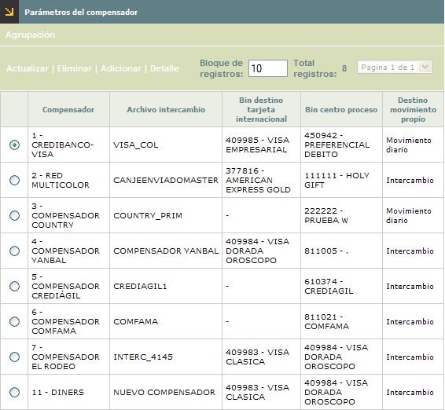
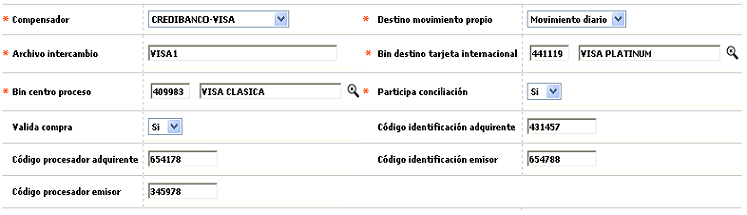
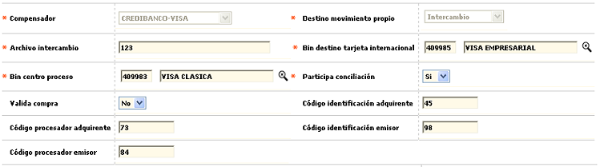
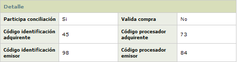
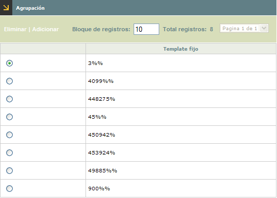
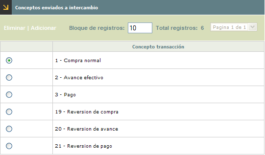
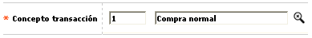

Parámetros de compensadores |
En este formulario la entidad puede efectuar el mantenimiento y consulta de la tabla que contiene la parametrización de las condiciones de interacción de la entidad respecto del(os) procesador(es) del movimiento generado desde y hacia la entidad.
El formulario cuenta con dos hipervínculos, Agrupación y Conceptos enviados a intercambio en los cuales se parametrizan las condiciones que el sistema debe evaluar para determinar el destino del movimiento propio de la entidad.

El formulario contiene las opciones Actualizar, Eliminar, Adicionar y Detalle.
Adicionar: si el usuario invoca la opción Adicionar se despliega un formulario con los siguientes campos:

Descripción de campos
Compensador |
Campo obligatorio tipo combo en el cual se selecciona el compensador para el cual se están definiendo las condiciones de operación |
Destino movimiento propio |
En
este campo tipo combo, obligatorio, se selecciona entre Movimiento
diario e Intercambio el destino del movimiento propio
de la entidad. Diario, indica que el movimiento de sus tarjeta
habientes propios lo procesa directamente la entidad, mientras que intercambio
le indica al sistema que se debe enviar el movimiento al compensador
quien lo reprocesa y se lo devuelve a la entidad. |
Archivo de intercambio |
Campo alfanumérico de 30 posiciones, obligatorio, dentro del que se registra el nombre del archivo que contiene el movimiento. |
Bin destino tarjeta internacional |
Este campo contiene lista de valores de la que debe seleccionarse el prefijo que centraliza el movimiento generado en el exterior por los tarjetahabientes propios; cuando el compensador es Visa este campo se convierte en obligatorio. |
Bin centro de proceso |
Campo
obligatorio que contiene lista de valores de la cual se selecciona que
debe seleccionarse el prefijo
que identifica a la entidad ante el procesador, usualmente corresponde
al bin de producto Clásica. |
Participa conciliación |
En este campo tipo combo, obligatorio, se selecciona entre Si o No el movimiento propio participa en la conciliación entre el canje enviado y recibido. |
Valida compra |
Campo
tipo combo donde se puede seleccionar entre Si o No el movimiento de
compras debe ser validado desde el momento de la captura o se omite;
esto se define con base en la forma de operar de algunos compensadores
a los cuales se envía el movimiento sin validar y éste
lo regresa a la entidad ya validado en el proceso de compensación.
|
Código identificación adquirente / emisor |
En
este campo alfanumérico de 11 posiciones, no obligatorio, se
registra el código asignado por American Express para identificar
a la entidad como emisor y/o adquirente. |
Código procesador adquirente / emisor |
Campo
alfanumérico, no obligatorio, de 11 posiciones en el que se registra
el código asignado por American Express para identificar a los
diferentes actores que participan en el proceso de Intercambio. |
Actualizar: si el usuario selecciona un registro e invoca la opción Actualizar se despliega un formulario en el cual los único campo NO modificable es el Compensador. Si el destino del movimiento es 'Intercambio' y en en el formularioAgrupación se ha parametrizado algún valor para el compensador, el campo no permite ser modificado, hasta tanto se eliminen los registros asociados.

Detalle: si el usuario selecciona un registro e invoca la opción Detalle se despliega un formulario con toda la información del registro y en el cual ninguno de sus campos es modificable.


El formulario contiene las opciones Eliminar y Adicionar
Adicionar: si el usuario invoca la opción Adicionar se despliega un formulario con un único campo:
Descripción de campos
Template fijo |
Campo
alfanumérico de 8 posiciones, obligatorio, dentro del que se
registra el comodín que permite filtrar el número de la
tarjeta, mediante la que se realiza la transacción y en combinación
con el bin o prefijo y el compensador dirigen el movimiento propio como
se señala. Se puede ingresar bien sea el número completo
del bin o los primeros dígitos por los cuales debe empezar el
bin, seguido del símbolo '%' |

El formulario contiene las opciones Eliminar y Adicionar
Adicionar: si el usuario invoca la opción Adicionar se despliega un formulario con un único campo:

Descripción de campos
Concepto transacción |
Campo obligatorio con lista de valores de la cual se seleccionan los conceptos asociados a las transacciones que deben encaminarse hacia el procesador, en caso de registrarse dentro del movimiento. |